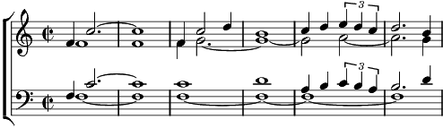

Ah_____________1. L'oiseau d'azur au soleil allumait
La belle idée, respirer de plus près
L'air de là-haut, l'aile blanche d'un rêve
La liberté, dans son cœur qui se lève
L'albatros t'appelle Failloubaz
Il te chante un refrain, lève-toi
Refrain:
Laisse tomber le sol
Laisse surgir l'envol
Prenons de l'envergure
Aux routes d'aventures
2. L'oiseau d'acier sur le sol s'ennuyait
Mais l'aviateur dans ta lune observait
Tantôt là-haut les moineaux, les corbeaux
Tantôt ici sa machine au repos
L'albatros t'appelle Failloubaz
Il te chante un refrain, lève-toi
Refrain
3. L'oiseau d'envie un beau jour volera
Et Failloubaz quittera l'ici-bas
Pour admirer sa géniale folie
Qui trouvera la raison de sa vie
L'albatros s'appelle Failloubaz
Il nous chante un refrain qui s'en va
Coda:
Il nous chante un refrain qui s'en va